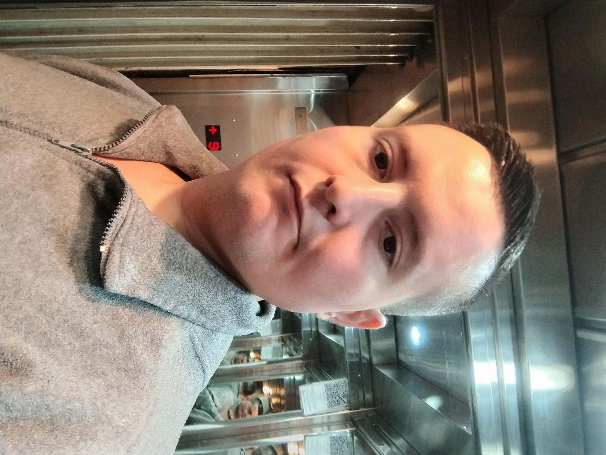

Sobre mí
Hola, soy Manuel Correderas. Soy un desarrollador apasionado por la tecnología y el diseño web. Mi misión es crear soluciones digitales innovadoras.
Proyectos
ALQUILARTE
Alquilarte es una solución digital integral para la administración de alquileres en el sector inmobiliario. Su objetivo es automatizar procesos críticos como el registro de propiedades, inquilinos, contratos y pagos, facilitando la generación de reportes contables y financieros en tiempo real. Además, incorpora alertas para vencimientos, coordinación de visitas y tareas de mantenimiento, e integración con sistemas contables, lo que permite mejorar la eficiencia y reducir errores en la gestión diaria de la empresa.
Ver más ➔
Salud Viandah
Salud Viandah es una propuesta gastronómica centrada en la alimentación saludable, rica y accesible. Ofrecemos viandas nutritivas, equilibradas y visualmente apetitosas, elaboradas con ingredientes frescos y de alta calidad. Nuestro objetivo es facilitar una alimentación consciente, sin sacrificar el sabor ni el placer de comer bien. A través de un menú variado que incluye opciones vegetarianas, veganas, keto, y con proteínas animales, buscamos adaptarnos a las distintas necesidades nutricionales y estilos de vida. Cada plato está diseñado por profesionales, para garantizar el aporte adecuado de nutrientes y apoyar una vida activa y saludable. Contamos con un sistema de pedidos online, promociones semanales, y una red de distribución eficiente que lleva nuestros platos directamente a la puerta de nuestros clientes. Además, promovemos la educación alimentaria, el consumo responsable, y una relación más saludable con la comida.
Ver más ➔Habilidades
- HTML5
- CSS3
- JavaScript
- Bootstrap
- Git & GitHub
- React (básico)
- Diseño Responsive
- Python (básico)
- SQL y bases de datos
- UML y diseño de sistemas
- Metodologías ágiles (Scrum)
- Resolución de problemas
- Trabajo en equipo
- Comunicación efectiva
- Adaptabilidad